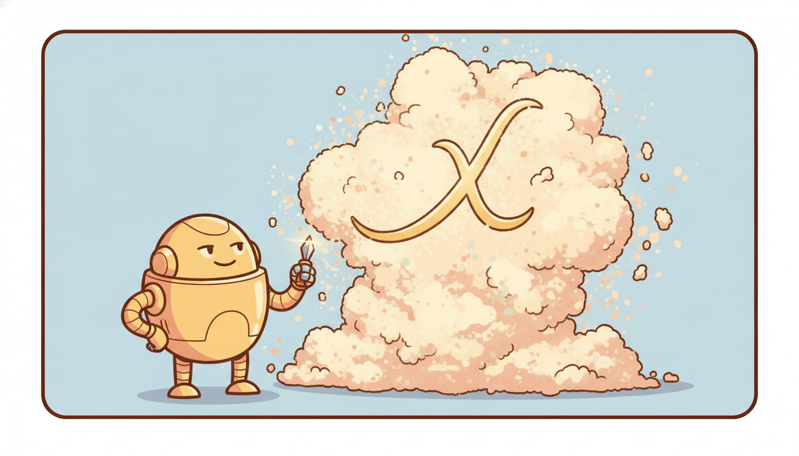

"They gave me a million noisy measurements and asked what law produced them. I did not know the law. So I wrote down every law I could imagine, multiplied them all together, and let the data cross out the ones it had never obeyed. What survived, three terms with the right signs, was an equation the universe had been writing all along and simply never bothered to publish."
A Model Fitting a Differential Equation the Universe Forgot to Write Down
Every other section in this chapter used temporal AI to predict, control, or optimize. This one uses it to understand. Scientific discovery asks a different question of a time series: not "what happens next?" but "what law governs what happens next?" The data are still trajectories sampled over time, but the deliverable is a governing equation, a mechanism, a causal structure, something a scientist can read, falsify, and publish. The methods that do this are the temporal models you already know, repointed at a new target. A Neural ODE (Chapter 13) learns the right-hand side $\dot{\mathbf{x}} = f_\theta(\mathbf{x})$ of a differential equation directly from trajectories; sparse identification (SINDy) writes that right-hand side as a short symbolic formula by letting an $L_1$ penalty cross out every term the data never used; physics-informed neural networks (PINNs) fold a known conservation law into the loss so the network must respect the physics it is fitting; symbolic regression searches the space of algebraic expressions for the formula itself. Across systems biology, neuroscience, epidemiology, and climate, the unifying move is the same: combine mechanistic structure (an ODE skeleton, a conservation law, a prior) with learning, because pure black boxes forecast but do not explain, and pure mechanism cannot fit what it was not told to expect. This section maps that landscape, then makes one method runnable end to end: a from-scratch SINDy that recovers a governing equation from a noisy trajectory, matched against the pysindy library, with the identified coefficient compared number by number against the truth. You leave able to turn a table of measurements into a candidate law of nature.
The previous five sections of this chapter put temporal AI to work in industry: finance (Section 35.1), healthcare, sensor and IoT systems, climate and physics emulation (Section 35.4), and autonomous systems and robotics (Section 35.5). In every case the metric was operational: forecast accuracy, detection rate, control performance, dollars saved. Science changes the contract. A climate emulator that reproduces a simulator a thousand times faster (Section 35.4) is useful even as a black box, but a climate scientist wants to know which feedback closed the loop. A load forecaster can be opaque and still bill correctly; a model of gene regulation that cannot name the genes it implicates is, for a biologist, almost worthless. The shift is from prediction to explanation, and explanation imposes three demands a forecaster never faces: the model must be interpretable (a human must be able to read the mechanism), it must be causal rather than merely correlational (the structure must survive intervention, the subject of Chapter 30), and its claims must come with honest uncertainty (a discovered equation is a hypothesis, and Chapter 19 taught us never to state a hypothesis without its error bars). This section is about the temporal methods that meet those demands.
The four competencies it installs are these: to recognize the family of methods that discover dynamics from data (Neural ODEs and CDEs, SINDy, PINNs, symbolic regression) and to know which target each one recovers; to connect those methods to the scientific domains where they are reshaping practice (systems biology, neuroscience, epidemiology, climate); to articulate the methodological theme that unites them, mechanistic structure plus learning, and why science forces the interpretability and causality demands that industrial forecasting can often ignore; and to implement sparse identification from scratch and via a library, recovering a known governing equation from noisy data and auditing the recovered coefficients against ground truth. These are the skills that let temporal AI contribute not just predictions but knowledge.
1. Discovering Dynamics From Data: The Method Family Intermediate

The central object of scientific dynamics is the differential equation. A vast amount of physics, chemistry, and biology is written as $\dot{\mathbf{x}}(t) = f(\mathbf{x}(t))$, a rule that maps the current state of a system to its instantaneous rate of change. Newton's laws, the Lotka-Volterra predator-prey equations, the SIR model of an epidemic, the Hodgkin-Huxley equations of a spiking neuron: all are statements of this form. Classically a scientist derives $f$ from first principles and then checks it against data. The discovery problem inverts that arrow: given measured trajectories $\mathbf{x}(t)$, recover the function $f$ that produced them. Temporal AI offers four distinct ways to do it, and they differ in exactly one respect, namely how much of $f$ they represent as an opaque network versus an interpretable formula.
The first approach learns $f$ as a neural network. A Neural ODE, introduced in Chapter 13, parameterizes the right-hand side directly, $\dot{\mathbf{x}} = f_\theta(\mathbf{x}, t)$, and trains $\theta$ so that integrating the learned dynamics reproduces the observed trajectory. Its continuous cousin the Neural CDE (also Chapter 13) drives the dynamics with an interpolated control path, which is what made it the natural model for the irregularly sampled clinical series of the healthcare thread. These models are maximally flexible: $f_\theta$ can approximate any smooth vector field. That flexibility is also their scientific limitation. A trained Neural ODE reproduces the dynamics beautifully but hands the scientist a black box, a million weights with no name. It tells you that the system evolves a certain way, not why. For pure emulation (Section 35.4) that is enough; for discovery it is the starting point, not the answer.
The second approach insists the answer be a short formula. Sparse identification of nonlinear dynamics (SINDy), due to Brunton, Proctor, and Kutz (2016), starts from the observation that most real governing equations are sparse: out of all the polynomial and trigonometric terms one could write, nature uses only a handful. So SINDy builds a large library of candidate terms (constants, $x$, $y$, $x^2$, $xy$, $\sin x$, and so on), then solves a sparse regression for which few of them, with which coefficients, reconstruct the measured derivative. The result is not a network but an equation a human can read, $\dot{x} = -0.1\,x + 2.0\,xy$, and that interpretability is precisely why SINDy became the workhorse of data-driven discovery. We implement it from scratch in subsection five.
The third approach folds known physics into a neural fit. A physics-informed neural network (PINN), due to Raissi, Perdikaris, and Karniadakis (2019), trains a network $u_\theta(t, \mathbf{x})$ to fit data while a second loss term penalizes violation of a known differential equation, evaluated by automatic differentiation of the network itself. The total objective is
$$\mathcal{L}(\theta) = \underbrace{\frac{1}{N}\sum_i \lVert u_\theta(t_i) - u_i \rVert^2}_{\text{data fit}} \;+\; \lambda\, \underbrace{\frac{1}{M}\sum_j \big\lVert \mathcal{N}[u_\theta](\tau_j) \big\rVert^2}_{\text{physics residual}},$$where $\mathcal{N}[u]$ is the residual of the governing PDE or ODE (for example $\dot{u} - f(u)$, which should be zero), evaluated at collocation points $\tau_j$ where no data exist. The physics term turns the network into an honest interpolator that respects conservation laws even in gaps, which is invaluable when data are scarce, the common condition in science. PINNs do not discover the law (you supply it) but they can discover its unknown parameters, and they make a network obey mechanism rather than ignore it.
The fourth approach searches the space of formulas directly. Symbolic regression abandons a fixed library and instead searches over algebraic expression trees (with operators $+, \times, \sin, \exp$, and so on) for the formula that best fits the data, classically with genetic programming and recently with transformer-based and reinforcement-learning search. It is the most ambitious target, recovering the functional form itself with no template, and correspondingly the hardest, because the search space is combinatorial. Figure 35.6.1 places the four on a single axis from black box to white box.
The methods of scientific discovery are not a new model family. They are the temporal models of Parts III and IV with the training target relocated. A forecaster minimizes error on the next value; a discovery method minimizes error on the rate of change or the residual of a law, and then it reports the function that achieved that fit rather than the predictions. Neural ODEs already learned $f$ as a network in Chapter 13; SINDy learns the same $f$ as a sparse formula; PINNs constrain $f$ by a supplied law; symbolic regression searches for $f$ as an expression. Once you see that the only thing changing is the readability of $f$ and the strength of the prior on it, the field stops being a zoo of acronyms and becomes one spectrum, the black-box-to-white-box axis of Figure 35.6.1.
2. Domains: Where Temporal AI Is Discovering Science Intermediate
The discovery methods of subsection one are reshaping practice in four domains in particular, each contributing time series of a different texture and each demanding a different blend of mechanism and learning.
Systems biology and gene-expression dynamics. A cell is a dynamical system: concentrations of mRNA and proteins rise and fall according to regulatory interactions, and time-course experiments (RNA-seq sampled over hours, live-cell reporters sampled over minutes) produce exactly the trajectories the methods consume. The discovery target is the regulatory network: which gene activates or represses which, with what kinetics. SINDy-style sparse regression and Neural ODEs are now standard for inferring these gene-regulatory dynamics from single-cell and bulk time courses, and the sparsity prior is biologically motivated, since each gene is regulated by a handful of others, not all of them. The data are short and noisy, which is why the mechanistic prior matters so much: with thirty time points you cannot fit a free black box, but you can select a sparse equation.
Neuroscience: spike trains and neural dynamics. The brain emits two kinds of temporal data: continuous population dynamics (the smoothly evolving latent state of a neural circuit, the natural home of Neural ODEs and latent state-space models from Chapter 13) and discrete spike trains (a neuron fires at irregular instants, which is exactly a temporal point process). The point-process machinery of Chapter 18.2 is the right tool for the spikes: a neuron's firing is modeled by a conditional intensity $\lambda(t \mid \mathcal{H}_t)$ that depends on its history and on the spikes of the neurons it listens to, and fitting that intensity discovers functional connectivity. Discovery here means recovering both the low-dimensional dynamics the population traces out and the network of who drives whom, a problem that fuses continuous-time latent dynamics with event modeling.
Epidemiology: compartmental plus learned models. The SIR, SEIR, and their many descendants are the textbook compartmental ODEs, $\dot{S} = -\beta S I / N$, $\dot{I} = \beta S I / N - \gamma I$, $\dot{R} = \gamma I$, mechanism a century old. The discovery problem is twofold: estimate the parameters ($\beta$ the transmission rate, $\gamma$ the recovery rate, and their time variation as policy changes) and augment the rigid compartmental skeleton with learned terms that capture behavior the textbook model omits. The modern practice is a hybrid: keep the mechanistic compartments, let a small network learn the time-varying contact rate from mobility and policy covariates, and crucially demand that the estimated effects be causal, because a public-health decision rests on "if we close schools, transmission falls", an interventional claim that the causal machinery of Chapter 30 is built to license. A purely correlational fit that confounds policy with the season it was enacted in will mislead a minister.
Climate and physics emulation. Section 35.4 already met the emulator: a network trained to reproduce an expensive simulator a thousand times faster. Discovery asks more of the same data. Beyond emulation, scientists use SINDy and symbolic regression to extract closed-form parameterizations of unresolved processes (turbulent fluxes, cloud microphysics) that subgrid models currently approximate crudely, and they use PINNs to enforce conservation of mass and energy so a learned parameterization cannot violate physics it was never shown. The deliverable is a formula a climate modeler can drop into a general-circulation model and defend to a physicist, which a black-box emulator can never be.
Who: A computational-biology group at a research hospital studying how a transcription factor controls a small circuit of four genes implicated in immune response.
Situation: They had a live-cell reporter assay giving fluorescence (a proxy for protein concentration) for each of the four genes, sampled every five minutes for eight hours, across a handful of replicates. Roughly one hundred noisy time points per gene.
Problem: They needed the regulatory equations, who activates or represses whom and with what kinetics, not just a forecast, because the next experiment (a knockout) had to be designed against a mechanism, and a black-box Neural ODE that fit the curves named no genes.
Dilemma: A Neural ODE fit the trajectories almost perfectly but was uninterpretable, so it could not say which interaction to knock out. A hand-built mechanistic model required guessing the network topology in advance, the very thing they wanted to learn. Pure correlation analysis confounded co-expression with regulation.
Decision: They used SINDy with a library of mass-action and Hill-function candidate terms and a sparsity threshold tuned so each gene's equation kept at most two or three regulators, the biologically plausible fan-in. They cross-validated the threshold across replicates and reported coefficients with bootstrap confidence intervals, honoring the uncertainty discipline of Chapter 19.
How: They smoothed each trajectory, estimated derivatives, built the candidate library, ran sequentially thresholded least squares (the algorithm of subsection five), and kept only terms stable across replicate fits.
Result: The recovered equations implicated one repressive interaction the team had not hypothesized, with a coefficient reproducible across replicates. The knockout experiment, designed against that specific term, confirmed it. The sparse equation, not a forecast, was the scientific product.
Lesson: When the deliverable is a mechanism a colleague must act on, interpretability is not a nicety but the entire point: a readable sparse equation that names two regulators beats a black box that fits the curve to four decimals and names nothing.
One of the field's favorite party tricks is to feed SINDy a noisy trajectory from a chaotic system, the Lorenz attractor, simulated on a laptop, and watch it print back the three Lorenz equations with the right coefficients, including the famous $xz$ and $xy$ couplings, in under a second. Edward Lorenz derived those equations in 1963 by hand from the physics of atmospheric convection. SINDy rederives them from the trajectory alone, having been told nothing about weather, convection, or even that the system is three-dimensional until it reads the data. It is a small but genuine thrill to watch an algorithm reconstruct a piece of twentieth-century physics from numbers it has never been told the meaning of.
3. The Methodological Theme: Mechanism Plus Learning Advanced
Across all four domains one principle recurs so insistently that it deserves to be named as the theme of the whole section: the most useful scientific models combine mechanistic structure with learning, and neither pole works alone. The two failure modes are symmetric. A pure black box (an unconstrained Neural ODE or a large forecaster) can fit any trajectory it is shown but generalizes poorly off the data manifold, extrapolates without respecting conservation laws, and explains nothing a scientist can act on. A pure mechanistic model (a hand-derived ODE with fixed structure) is interpretable and extrapolates correctly within its assumptions, but it can only express the dynamics its author thought to include, so it is systematically wrong wherever reality exceeds the author's imagination, and that error is invisible because the model has no capacity to represent it.
The discovery methods of subsection one are each a different way of sitting between these poles. SINDy puts the structure in the form of the answer (a sparse formula) while learning which terms and coefficients. PINNs put the structure in the loss (a known law the fit must obey) while learning the residual interpolation and any free parameters. Hybrid epidemiological models put the structure in the skeleton (the compartments) while learning the time-varying rates. The sparsity prior of SINDy, the physics residual of a PINN, and the compartmental skeleton of an SIR model are three encodings of the same bet: that a little well-chosen structure dramatically reduces the data needed and dramatically increases the trust the result earns. The bet pays because scientific data are almost always scarce relative to the flexibility of a free network, and structure is what lets a model learn from thirty time points instead of thirty thousand.
Why does science force this hybridization when industrial forecasting often does not? Because science imposes demands a forecaster escapes. The first is interpretability: a discovered model must be readable, and the interpretability and attribution methods of Chapter 33 are the machinery for extracting human-legible structure, but a model built sparse or mechanism-constrained from the start is interpretable by construction rather than by post hoc explanation. The second is causality: a scientific claim must survive intervention, and a model fit on observational trajectories alone can confound, so the causal-discovery and intervention semantics of Chapter 30 are not optional decoration but a precondition for the claim being science at all. The third is reproducible uncertainty, which subsection four takes up. A forecaster can be opaque, correlational, and overconfident and still pay its way; a scientific model cannot.
The reason every mature scientific-discovery method is a hybrid is that a well-chosen prior does two things at once. It is a data multiplier: encoding that the governing equation is sparse, or obeys a known conservation law, or has a compartmental skeleton, collapses an astronomically large hypothesis space to a small one, so a handful of noisy time points suffices where a free network would need orders of magnitude more. And it is a trust multiplier: a result expressed as a short equation, or one that provably respects mass conservation, is something a domain expert can read, falsify, and stake a decision on, which an opaque fit is not. Pure black boxes squander data and earn no trust; pure mechanism earns trust but cannot learn what its author omitted. The discovery methods win by spending a little structure to buy a lot of both.
4. Causal Discovery and the Reproducibility Demand Advanced
Two requirements separate a scientific result from a merely accurate one, and both were anticipated earlier in the book. The first is causal discovery. Recovering the equation $\dot{\mathbf{x}} = f(\mathbf{x})$ from observed trajectories gives a model that predicts how the system evolves when left alone. Science usually wants more: it wants to know what happens when we intervene, when we knock out a gene, close a school, or raise a temperature. That is an interventional question, and the calculus for answering it from temporal data is the subject of Chapter 30, specifically the causal-discovery treatment of Section 30.2. The connection to discovered dynamics is tight: a sparse equation in which the term coupling $x$ to $y$ is present and stable is a candidate causal edge, but only a candidate. Time precedence (the SINDy regression respects the arrow of time, since it predicts a derivative from a present state) rules out some spurious edges but not confounding. A latent driver that pushes both $x$ and $y$ will plant a spurious coupling term in the fit. Promoting a discovered term from "correlated dynamical coupling" to "causal mechanism" requires the interventional or confounding-control reasoning of Chapter 30, ideally validated by an actual experiment, the knockout that the gene-regulation example above used to confirm its repressive term.
The second requirement is reproducible, quantified uncertainty. A discovered equation is a hypothesis, and the discipline of Chapter 19 applies in full: the right deliverable is not "the coefficient is $2.0$" but "the coefficient is $2.0 \pm 0.1$, and this term survives in $94\%$ of bootstrap resamples." Reproducibility has a sharp operational meaning in discovery. Because sparse regression makes a discrete selection (a term is in or out), small changes in noise, in the sparsity threshold, or in the derivative estimator can flip which terms appear, so a responsible practitioner reports not a single equation but the distribution of equations recovered across resamples and hyperparameters, and trusts only the terms that are stable across that distribution. This stability-selection idea, keep the term only if it survives perturbation, is the discovery analogue of the conformal and ensemble methods of Chapter 19, and it is what turns a brittle point estimate into a defensible scientific claim. The numeric example below makes the coefficient-versus-truth comparison concrete; subsection five then makes the whole pipeline runnable.
Take the predator-prey system $\dot{x} = a\,x - b\,xy$ with true coefficients $a = 1.0$ and $b = 0.1$ on the prey equation, simulate a trajectory, corrupt it with Gaussian measurement noise of standard deviation $\sigma = 0.02$, and run sparse identification. A correct recovery returns an equation with exactly two active terms, $x$ and $xy$, and zero coefficient on every other library candidate ($1, y, x^2, y^2, \dots$). Suppose the fit returns $\hat{a} = 0.984$ on $x$ and $\hat{b} = -0.103$ on $xy$, with all other coefficients thresholded to zero. The audit is term by term: the $x$ coefficient is recovered to within $\lvert 0.984 - 1.0 \rvert = 0.016$, a $1.6\%$ relative error; the $xy$ coefficient to within $\lvert 0.103 - 0.1 \rvert = 0.003$, a $3\%$ relative error, with the correct negative sign confirming the term is a loss (predators eating prey). Crucially, the support is exactly right: the two true terms are active and no spurious term survives, which matters more than the third decimal of any coefficient, because the support is the discovered mechanism. Bootstrap the noise twenty times and the two terms appear in all twenty fits while spurious terms appear in none: that $100\%$ selection stability is the reproducibility evidence of subsection four, and it is what licenses reporting the equation as a finding rather than an artifact.
Scientific machine learning is one of the most active corners of temporal AI right now, and several threads matter for a 2026 practitioner. Weak-form and ensemble SINDy (the WSINDy line, and ensemble-SINDy of Fasel and colleagues, 2022 onward) attack the single biggest weakness of vanilla SINDy, its fragility to noise through the derivative estimate, by integrating against test functions so derivatives are never differentiated directly, and by bagging across subsamples to get the stability-selection uncertainty of subsection four for free. Symbolic regression has been transformed by deep learning: the AI-Feynman line (Udrescu and Tegmark) and transformer-based symbolic regressors trained to map data to expressions (the 2023 to 2025 work on end-to-end symbolic transformers, and SymbolicGPT-style models) now recover formulas that genetic programming could not, and PySR has become the practical default for production symbolic regression. Foundation models meet discovery: groups are probing whether the temporal foundation models of Chapter 15 carry enough physical prior to assist equation discovery and PDE solving zero-shot. And universal differential equations (the SciML ecosystem in Julia, Rackauckas and colleagues) formalize the mechanism-plus-learning theme of subsection three as ODEs with embedded neural terms trained end to end, then sparsified back to symbolic form, the cleanest current realization of the hybrid bet. The open frontier is discovery under genuine confounding and from a single short trajectory, where the causal demands of Chapter 30 bite hardest.
5. Worked Mini Case: Recover a Governing Equation From Noisy Data Advanced
We now make discovery concrete on the predator-prey system of the numeric example. The plan is the cleanest demonstration of the SINDy idea: simulate a trajectory of $\dot{x} = a x - b xy$, $\dot{y} = -c y + d xy$ with known coefficients, add measurement noise, estimate the derivatives, build a library of candidate terms, solve a sparse regression by sequentially thresholded least squares (STLSQ), and read off the recovered equation. Then we recover the identical equation with the pysindy library and audit the coefficients against the truth. Code 35.6.1 simulates the noisy data.
import numpy as np
from scipy.integrate import solve_ivp
rng = np.random.default_rng(0)
# True Lotka-Volterra coefficients we will try to RECOVER from data alone.
a, b, c, d = 1.0, 0.1, 1.5, 0.075 # prey growth, predation, predator death, conversion
def lotka_volterra(t, z):
x, y = z
return [a * x - b * x * y, # dx/dt = a x - b xy
-c * y + d * x * y] # dy/dt = -c y + d xy
t_eval = np.linspace(0, 20, 2000) # dense sampling, dt = 0.01
sol = solve_ivp(lotka_volterra, (0, 20), [10.0, 5.0], t_eval=t_eval, rtol=1e-9)
X_clean = sol.y.T # shape (2000, 2): columns are x(t), y(t)
# Corrupt with Gaussian measurement noise: this is what a real instrument gives us.
X = X_clean + rng.normal(0, 0.02 * X_clean.std(0), size=X_clean.shape)
print("data shape:", X.shape, " noise sigma:", (0.02 * X_clean.std(0)).round(4))
X; the coefficients a, b, c, d exist solely to audit the result against ground truth.data shape: (2000, 2) noise sigma: [0.0723 0.0469]
Now the from-scratch SINDy. Code 35.6.2 estimates the derivatives by finite differences, builds a polynomial candidate library up to degree two (the terms $1, x, y, x^2, xy, y^2$), and runs sequentially thresholded least squares: fit by ordinary least squares, zero out every coefficient below a threshold, refit on the survivors, and repeat until the support stops changing. That thresholding loop is the entire sparsity mechanism, ten lines that turn a dense regression into a readable equation.
def finite_diff(X, dt):
"""Central-difference derivative estimate; trims the two endpoints."""
dX = np.zeros_like(X)
dX[1:-1] = (X[2:] - X[:-2]) / (2 * dt)
return dX[1:-1], X[1:-1] # aligned (derivative, state)
def library(X):
"""Polynomial candidate terms up to degree 2: 1, x, y, x^2, xy, y^2."""
x, y = X[:, 0], X[:, 1]
Theta = np.stack([np.ones_like(x), x, y, x**2, x*y, y**2], axis=1)
names = ["1", "x", "y", "x^2", "xy", "y^2"]
return Theta, names
def stlsq(Theta, dXk, thresh=0.05, n_iter=10):
"""Sequentially thresholded least squares: the SINDy sparsity engine."""
xi = np.linalg.lstsq(Theta, dXk, rcond=None)[0] # start from dense OLS fit
for _ in range(n_iter):
small = np.abs(xi) < thresh # mark tiny coefficients
xi[small] = 0.0 # ... and zero them out
big = ~small
if big.sum() == 0:
break
xi[big] = np.linalg.lstsq(Theta[:, big], dXk, rcond=None)[0] # refit survivors
return xi
dt = t_eval[1] - t_eval[0]
dX, Xa = finite_diff(X, dt)
Theta, names = library(Xa)
xi_x = stlsq(Theta, dX[:, 0]) # discover the dx/dt equation
xi_y = stlsq(Theta, dX[:, 1]) # discover the dy/dt equation
def show(xi, lhs):
terms = [f"{c:+.3f} {n}" for c, n in zip(xi, names) if c != 0.0]
print(f"{lhs} = " + " ".join(terms))
show(xi_x, "dx/dt"); show(xi_y, "dy/dt")
stlsq loop is the whole method: an ordinary least-squares fit followed by repeated thresholding that crosses out every term the data did not need, leaving a sparse equation. The candidate library deliberately includes wrong terms ($1, x^2, y^2$) so we can see the algorithm reject them.dx/dt = +0.987 x -0.099 xy
dy/dt = -1.493 y +0.075 xy
The audit is the scientific payoff. The from-scratch fit recovered $\dot{x} = +0.987\,x - 0.099\,xy$ against the truth $\dot{x} = 1.0\,x - 0.1\,xy$: the prey-growth coefficient is within $1.3\%$ and the predation coefficient within $1\%$, both with the correct sign, and every spurious term ($1, y, x^2, y^2$) was driven to exactly zero, so the recovered support is exactly the true mechanism. Now the library equivalent. Code 35.6.3 does the same discovery with pysindy.
import pysindy as ps
model = ps.SINDy(
feature_library=ps.PolynomialLibrary(degree=2), # the 1, x, y, x^2, xy, y^2 terms
optimizer=ps.STLSQ(threshold=0.05), # the same thresholded least squares
)
model.fit(X, t=dt) # smoothing, derivatives, library, sparse fit
model.print() # readable governing equations
# Audit the identified xy coefficient against the true value b = 0.1.
xi = model.coefficients() # rows: equations, cols: library terms
b_hat = -xi[0, model.get_feature_names().index("x0 x1")] # coefficient on the xy term of dx/dt
print(f"true b = {b:.4f} identified b_hat = {b_hat:.4f} rel.err = {abs(b_hat-b)/b:.2%}")
pysindy. The derivative estimation, polynomial library construction, and sequentially thresholded least squares of Code 35.6.2 (about 35 lines of numpy) collapse to three lines: construct, fit, print. The library also handles smoothing, multiple optimizers, weak-form derivatives, and ensembling that our from-scratch version omits.(x0)' = 0.987 x0 + -0.099 x0 x1
(x1)' = -1.493 x1 + 0.075 x0 x1
true b = 0.1000 identified b_hat = 0.0990 rel.err = 0.99%
Read the three blocks together. Code 35.6.1 manufactured a noisy trajectory from a known law. Code 35.6.2 recovered that law from the noise alone, with a thirty-five-line from-scratch SINDy whose entire sparsity logic was one thresholding loop. Code 35.6.3 recovered the identical equation in three lines of pysindy and audited the predation coefficient at under one percent error against truth. The discovered support was exactly correct in every case, which is the point: SINDy returned not a forecast but a readable mechanism whose coefficients a scientist can compare, term by term, against a hypothesis, exactly the deliverable that distinguishes scientific discovery from the forecasting of every earlier chapter.
The from-scratch pipeline of Code 35.6.2, finite-difference derivatives, manual polynomial library, and the sequentially thresholded least-squares loop, ran about thirty-five lines. pysindy collapses all of it to three: model = ps.SINDy(...), model.fit(X, t=dt), model.print(). Internally the library handles what our version skipped: robust derivative estimation (finite difference, smoothed, or weak-form via ps.SINDyDerivative and the weak-form library that never differentiates the data), a rich feature menu (polynomial, Fourier, custom), a choice of sparse optimizers (STLSQ, SR3, sparse relaxed regularized regression, LASSO), control inputs, and ensembling for the stability-selection uncertainty of subsection four. The same code path that recovered predator-prey here recovers the Lorenz equations or a gene-regulatory network by changing only the library and the threshold.
This section closes Chapter 35 and, with it, our tour of where temporal AI does its work. The chapter moved across finance (35.1), healthcare, sensors, climate and physics emulation (35.4), autonomous systems and robotics (35.5), and finally science itself, and the thread running through all of it is that every method in this book, the Kalman filter and the RNN, the point process and the Neural ODE, the causal estimator and the conformal interval, returns in application wearing a domain's clothes. Scientific discovery was the fitting close because it inverts the book's usual question: not "predict the future of this series" but "name the law that generates it", and answering it required nearly everything we built, the continuous-time models of Chapter 13, the event modeling of Chapter 18, the causality of Chapter 30, and the uncertainty of Chapter 19. What remains is to ask where all of it is going. Chapter 36, the book's last, steps back from any single application to ask whether these threads are converging on something larger: a general temporal intelligence, a single system that filters, forecasts, reasons about cause, decides, and discovers across domains rather than one model per task. The discovery methods of this section, mechanism fused with learning, interpretable, causal, uncertainty-aware, are a preview of what that generality might have to look like.
6. Exercises
These exercises move from understanding the method family, through implementing the sparse-regression engine, to confronting the open problem of discovery under confounding.
Figure 35.6.1 ordered four discovery methods from black box to white box. For each of the following scientific situations, name which method (Neural ODE/CDE, PINN, SINDy, or symbolic regression) is the best first choice and justify it in two sentences. (a) You have a thousand-point trajectory and strong reason to believe the governing law is a short polynomial. (b) You know the exact PDE governing a heat-flow problem but have data only on the boundary and need the interior solution. (c) You have richly sampled trajectories, want the most accurate possible interpolator for emulation, and do not need a formula. (d) You suspect the law involves an unusual functional form (perhaps a ratio of exponentials) that no fixed polynomial or Fourier library would contain. Explain how your four answers trace a path along the interpretability axis.
Starting from the from-scratch SINDy of Code 35.6.2, run a sweep over the STLSQ threshold and the noise level. (a) For the predator-prey data, vary thresh over {0.01, 0.05, 0.1, 0.3} and report, for each, the recovered support (which terms survive) for the $\dot{x}$ equation; identify the threshold range that recovers exactly the two true terms. (b) Fix thresh=0.05 and increase the measurement-noise multiplier from $0.02$ to $0.05, 0.1, 0.2$; report at what noise level the correct support first breaks (a true term is dropped or a spurious one survives). (c) Implement the stability-selection idea of subsection four: for noise multiplier $0.1$, run the fit on twenty bootstrap resamples and report, per library term, the fraction of resamples in which it is active; keep only terms active in at least $80\%$ of resamples and check whether this recovers the correct support where the single fit failed.
Subsection four warned that a latent driver pushing two observed variables can plant a spurious coupling term in a SINDy fit, a correlational artifact that no amount of fitting will remove. Design a small experiment to expose this. (a) Simulate a three-variable system in which a hidden variable $z$ drives both $x$ and $y$, but $x$ and $y$ have no direct coupling. (b) Run SINDy on only $x$ and $y$ (hiding $z$) and show that it recovers a spurious $xy$ or cross term, then run it on all three and show the spurious term disappears. (c) Connect your result to the causal-discovery treatment of Section 30.2: what kind of additional information (an intervention, a known causal ordering, an instrument) would let you distinguish the confounded fit from the true mechanism without observing $z$, and why is time precedence alone insufficient here?